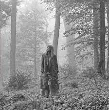
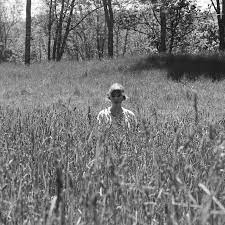

Foklore
It wouldve fun if you wouldve been THE 1


Folklore (stylized in all lowercase) is the eighth studio album by American singer-songwriter Taylor Swift.
It was a surprise album, released on July 24, 2020, via Republic Records. After the outbreak of the COVID-19 pandemic
in early 2020, Swift canceled the concert tour for her seventh studio album Lover (2019). She conceived Folklore during
quarantine as "a collection of songs and stories that flowed like a stream of consciousness", working with producers
Aaron Dessner and Jack Antonoff virtually; Dessner and Antonoff operated from recording studios in Hudson Valley and
New York City, respectively, while Swift recorded her vocals in a home studio at her Los Angeles residence. (Wikipedia)
Some Folklore Tracks
The 1
Mirrorball
Exile
August
Illicit Affairs
Cardigan
Peace
Betty